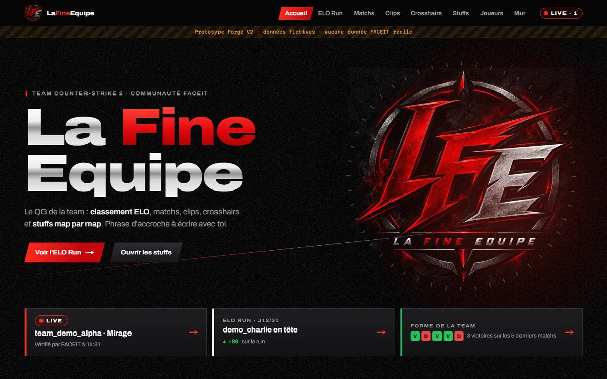
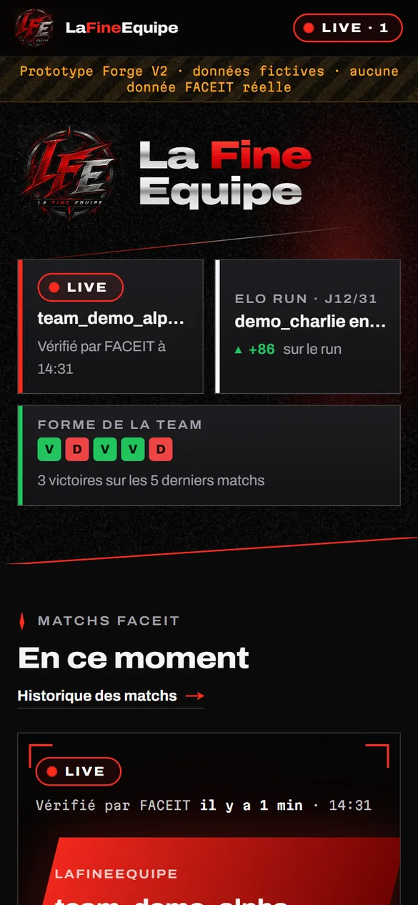
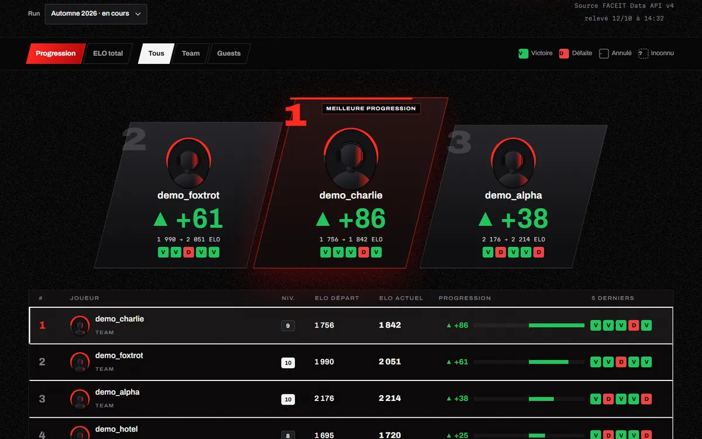
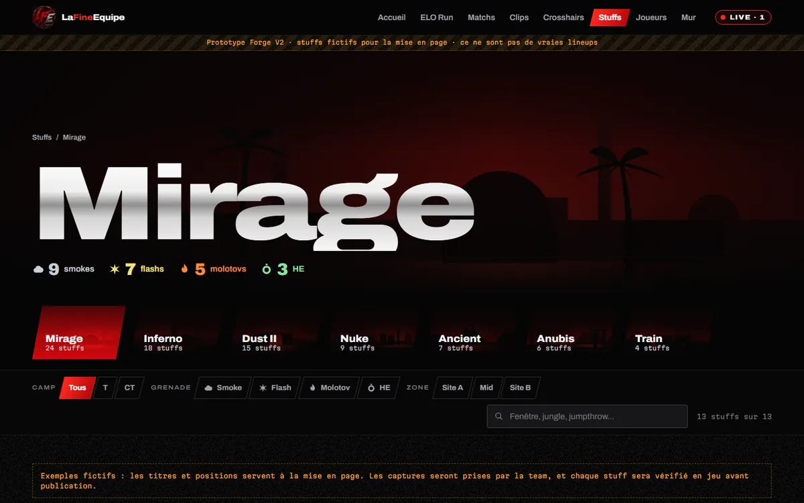
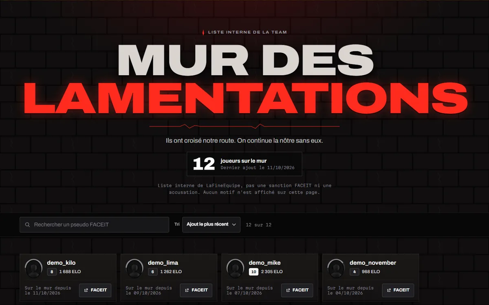
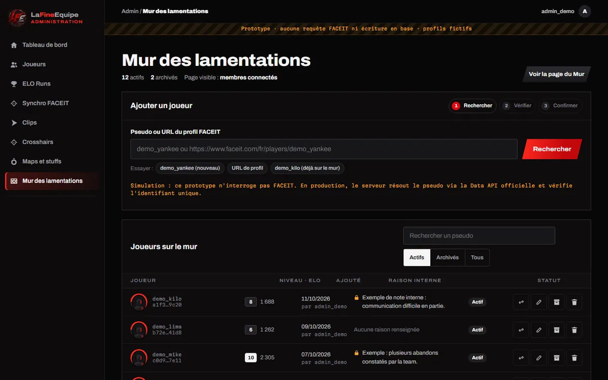

LaFineEquipe · Direction validée
Forge V2
Les six maquettes demandées, consultables dans le navigateur. Données entièrement fictives, aucune base ni clé FACEIT. Chaque page a un panneau « Contrôles » en bas à gauche : vue mobile, rôle visiteur / membre / admin, états du live.

À tester
Les six maquettes

Accueil desktop
Hero affiné, accès rapides au live, au classement et à la forme de la team.
Ouvrir →
Accueil mobile
Logo réduit, tuiles au pouce, barre d'onglets en bas d'écran.
Ouvrir en vue mobile →
ELO Run
Podium Forge, tableau lisible façon TAB, 5 derniers résultats V/D, graphique avec infobulle.
Ouvrir →
Stuffs et fiche détaillée
Grandes cartes de maps, navigation par camp, grenade et zone.
Bibliothèque →Fiche détaillée →
Mur des lamentations
Mur gravé, briques en quinconce, recherche par pseudo, compteur, accès réservé.
Ouvrir →
Admin du Mur
Pseudo ou URL, vérification du profil, doublon bloqué, raison privée, archivage.
Ouvrir →Tes demandes
Ce qui a changé
Victoire verte, défaite rouge
Partout : accueil, ELO Run, fiches joueurs, séries. La lettre reste toujours présente, comme le signe et la flèche des écarts d'ELO.
Pourquoi les lettres sont indispensables
Testé au validateur de couleurs : pour un daltonien deutéranope, ce vert et ce rouge sont proches (écart 7,4, seuil conseillé 8). V, D, + et − ne sont donc jamais retirés. Le LIVE se distingue par sa forme de pastille et son point animé ; le rouge LFE reste réservé à l'identité : boutons, menu actif, podium.
Typographie droite
Archivo reste la signature des grands titres, mais droite. Pseudos, chiffres et tableaux en graisse moyenne, chiffres alignés. Les capitales ne servent plus qu'aux petites étiquettes et au titre du Mur.
Accueil mobile plus utile
Logo à 96 px à côté du titre, accès au live et au classement dès le premier écran, boutons d'au moins 48 px, barre d'onglets en bas : Accueil, ELO, Matchs, Stuffs, Menu.
ELO Run combiné
Podium Forge pour les trois premiers, tableau lisible pour tous : rang, avatar, départ, actuel, progression, niveau, cinq derniers résultats. Bascule progression / ELO total, filtre Team / Guests, courbe uniquement tirée des relevés.
Stuffs plus pratiques
Plus aucune trajectoire inventée. Chaque fiche montre départ, arrivée, capture de placement, capture de visée, technique, vidéo au clic et date de vérification. Les exemples sont étiquetés « fictif ».
Décision à valider
Mur des lamentations
Visibilité proposée : membres de la team uniquement
- Visiteurs : page verrouillée, contenu jamais envoyé au navigateur, page non indexée.
- Membres : pseudo, avatar, niveau, ELO, date d'ajout et lien FACEIT.
- Admins : en plus, la raison interne et la gestion.
- Aucun motif public et aucun vocabulaire de sanction. La page précise qu'il ne s'agit pas d'une sanction FACEIT.
- Pourquoi restreindre : un pseudo FACEIT reste une donnée personnelle (RGPD). Une liste « à éviter » publique exposerait la team à des réclamations. Prévoir aussi le retrait sur demande.
- Comptes membres : invitation par e-mail depuis l'admin, sans inscription publique.
Données et sécurité
avoid_list_entries id uuid clé faceit_player_id text unique : bloque les doublons nickname text pseudo affiché, resynchronisé faceit_url text avatar_url text facultatif skill_level, faceit_elo, profile_synced_at status active | archived added_at, added_by → auth.users, updated_at avoid_list_private_notes (admins seulement) entry_id → avoid_list_entries, reason, updated_by, updated_at profiles (remplace admin_profiles) user_id, role : admin | member
- RLS : les membres lisent les entrées actives ; seuls les admins écrivent et lisent les raisons.
- La raison est dans une table à part, pour qu'aucune requête membre ne puisse la lire.
- Planning : nouvelle étape « 2b » après la phase 2, car elle réutilise la résolution FACEIT et l'authentification.
Avant la phase 1
Ce qu'il me faut
- Ta validation de Forge V2, ou la liste des ajustements, page par page.
- La visibilité du Mur : « membres uniquement » comme je le propose, ou public.
- Le logo rond original et, si possible, les deux versions en PNG transparent ou en SVG. Je n'ai toujours qu'un seul fichier. Dans Téléchargements, lafine.png est le même emblème en 78 px. La navbar et le favicon utilisent pour l'instant un recadrage de l'emblème, nommé lfe-round-temp pour être remplacé facilement.
Rien n'a été développé côté serveur. Ces pages sont des maquettes HTML statiques du dossier design/forge-v2/. L'architecture technique validée ne change pas ; seuls s'ajoutent la page Mur, ses deux tables et le rôle « membre ».